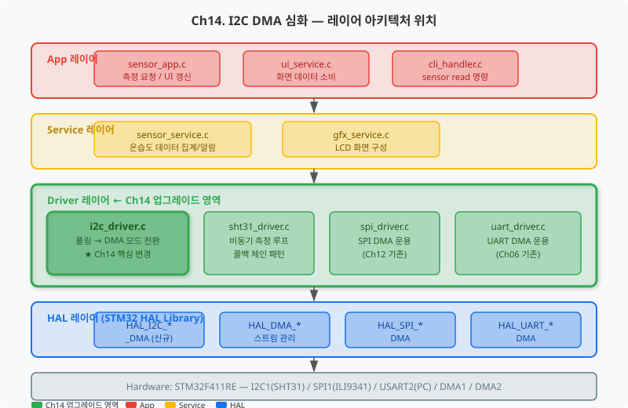
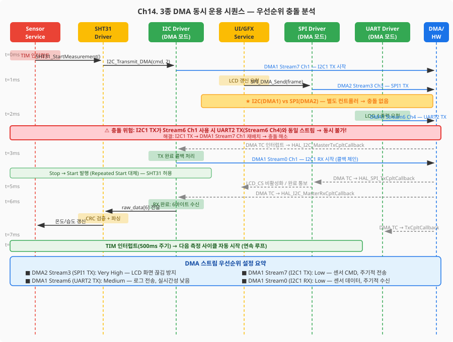
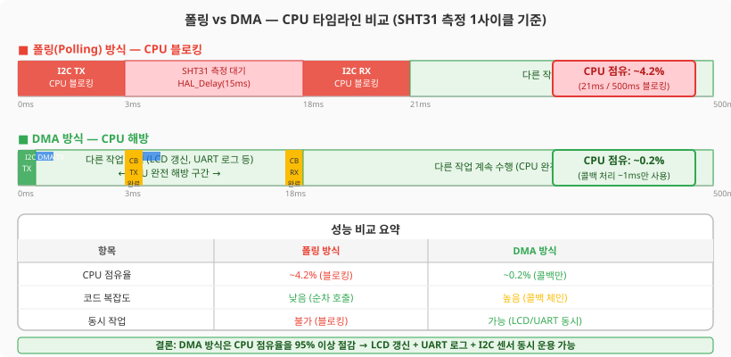
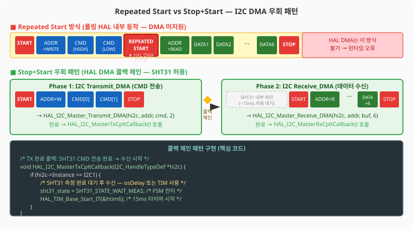
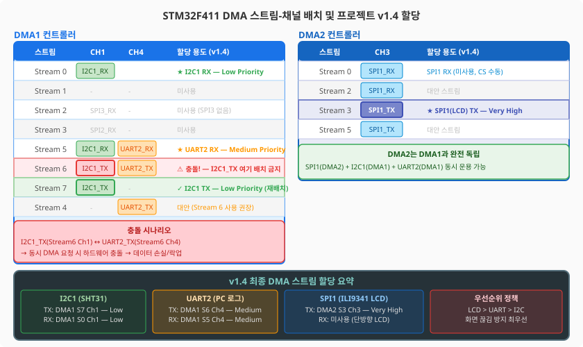

SHT31 온습도 센서를 DMA 비동기 방식으로 전환하고, UART·SPI·I2C 세 가지 DMA를 동시에 운용하는 실무 아키텍처를 완성합니다.
프로젝트 v1.3까지 우리는 세 가지 Driver를 구축했습니다. UART Driver(Ch06), SPI Driver(Ch12), I2C Driver(Ch11). 그런데 I2C Driver만 아직 폴링(Polling) 방식입니다. 이번 챕터에서는 i2c_driver.c를 DMA 모드로 업그레이드하여 시스템의 모든 주요 통신 드라이버가 DMA로 동작하는 상태를 완성합니다.

이 챕터에서 업그레이드되는 I2C DMA Driver의 공개 API입니다. 상위 레이어(sht31_driver.c, sensor_service.c)는 아래 인터페이스만 사용하면 됩니다. 내부에서 DMA를 쓰는지 폴링을 쓰는지 알 필요가 없습니다. 이것이 레이어드 아키텍처의 핵심 이점입니다.
/* ch14_i2c_dma_driver.h — 공개 인터페이스 */
/* I2C DMA 드라이버 초기화 */
HAL_StatusTypeDef I2cDma_Init(I2cDmaHandle *drv, I2C_HandleTypeDef *hi2c);
/* 비동기 송신 — 즉시 반환, 완료는 tx_cb 콜백으로 통보 */
HAL_StatusTypeDef I2cDma_MasterTransmit(I2cDmaHandle *drv,
uint16_t dev_addr,
uint8_t *p_data,
uint16_t size,
I2cDmaTxCpltCb tx_cb);
/* 비동기 수신 — 즉시 반환, 완료는 rx_cb 콜백으로 통보 */
HAL_StatusTypeDef I2cDma_MasterReceive(I2cDmaHandle *drv,
uint16_t dev_addr,
uint8_t *p_data,
uint16_t size,
I2cDmaRxCpltCb rx_cb);
/* SHT31 드라이버 — DMA 비동기 인터페이스 */
HAL_StatusTypeDef SHT31_StartMeasurement(void); /* 측정 시작 (즉시 반환) */
bool SHT31_GetData(float *temp, float *humi); /* 데이터 읽기 */

이 챕터를 완료하면 다음을 할 수 있습니다.
Ch11에서 구현한 SHT31 드라이버는 HAL_I2C_Master_Transmit과
HAL_I2C_Master_Receive(폴링)을 사용했습니다.
이 방식은 코드가 단순하고 이해하기 쉽지만, 치명적인 약점이 있습니다.
I2C 전송이 완료될 때까지 CPU가 아무 일도 하지 못하고 기다려야 한다는 점입니다.
SHT31 온습도 측정의 폴링 vs DMA 성능을 구체적으로 비교해 봅시다. SHT31의 고정밀 단발 측정 시퀀스는 다음과 같습니다:

폴링 방식은 500ms마다 21ms를 CPU가 I2C 작업으로 블로킹되므로 약 4.2%의 CPU 점유율을 가집니다. 반면 DMA 방식은 콜백 처리에 ~1ms만 사용하여 CPU 점유율이 0.2% 수준으로 줄어듭니다. 이 차이가 중요한 이유는 프로젝트 v1.4에서는 LCD 화면 갱신(SPI DMA), PC 로그 출력(UART DMA), 센서 측정(I2C DMA)이 동시에 돌아가야 하기 때문입니다.
STM32 HAL은 I2C DMA 전송을 위한 두 가지 함수를 제공합니다.
이름은 폴링 버전과 거의 같고 끝에 _DMA만 붙습니다.
하지만 동작 방식은 근본적으로 다릅니다.
/* ===== HAL I2C DMA API 비교 ===== */
/* [폴링] TX — 완료될 때까지 대기 후 반환 */
HAL_StatusTypeDef HAL_I2C_Master_Transmit(I2C_HandleTypeDef *hi2c,
uint16_t DevAddress,
uint8_t *pData,
uint16_t Size,
uint32_t Timeout); /* ← 타임아웃 있음 */
/* [DMA] TX — DMA 설정 후 즉시 반환, 완료는 콜백으로 통보 */
HAL_StatusTypeDef HAL_I2C_Master_Transmit_DMA(I2C_HandleTypeDef *hi2c,
uint16_t DevAddress,
uint8_t *pData,
uint16_t Size); /* ← 타임아웃 없음 */
/* [폴링] RX */
HAL_StatusTypeDef HAL_I2C_Master_Receive(I2C_HandleTypeDef *hi2c,
uint16_t DevAddress,
uint8_t *pData,
uint16_t Size,
uint32_t Timeout);
/* [DMA] RX */
HAL_StatusTypeDef HAL_I2C_Master_Receive_DMA(I2C_HandleTypeDef *hi2c,
uint16_t DevAddress,
uint8_t *pData,
uint16_t Size);
DMA 버전에서 중요한 변화가 두 가지 있습니다. 첫째, Timeout 파라미터가 없습니다. DMA는 비동기이므로 함수 안에서 대기하지 않기 때문입니다. 둘째, 완료 여부를 콜백으로 알립니다. DMA 전송이 완료되면 DMA 인터럽트가 발생하고, HAL이 이를 처리하여 사용자가 구현한 콜백 함수를 호출합니다.
/* ===== HAL I2C DMA 완료 콜백 (사용자가 구현) ===== */
/**
* @brief I2C Master TX DMA 완료 — HAL이 자동 호출
* @note DMA 인터럽트 컨텍스트에서 실행됩니다 (ISR!)
* 실행 시간을 최대한 짧게 유지하세요.
*/
void HAL_I2C_MasterTxCpltCallback(I2C_HandleTypeDef *hi2c)
{
if (hi2c->Instance == I2C1) {
/* TX 완료 처리 — 플래그 설정 또는 다음 동작 트리거 */
LOG_D("I2C1 TX 완료");
/* → 여기서 다음 RX를 시작하거나 플래그를 세웁니다 */
}
}
/**
* @brief I2C Master RX DMA 완료 — HAL이 자동 호출
*/
void HAL_I2C_MasterRxCpltCallback(I2C_HandleTypeDef *hi2c)
{
if (hi2c->Instance == I2C1) {
LOG_D("I2C1 RX 완료 — 데이터 준비됨");
/* → 여기서 수신된 데이터를 파싱하거나 플래그를 세웁니다 */
}
}
/**
* @brief I2C 오류 — HAL이 자동 호출
*/
void HAL_I2C_ErrorCallback(I2C_HandleTypeDef *hi2c)
{
if (hi2c->Instance == I2C1) {
LOG_E("I2C1 DMA 오류: ErrorCode=0x%08lX", hi2c->ErrorCode);
/* → 오류 복구 처리 */
}
}
CubeMX에서 I2C DMA를 활성화하는 절차입니다. 이 단계를 빠뜨리면 HAL_I2C_Master_Transmit_DMA를 호출해도 아무 일이 일어나지 않습니다.
이번 절에서는 이 챕터에서 가장 어려운 개념인 Repeated Start 미지원 우회 패턴을 다룹니다. 처음 보면 콜백 체인 흐름이 복잡해 보이지만, 단계별로 따라가면 반드시 이해할 수 있습니다. 그리고 한 번 익히면 I2C뿐 아니라 여러 비동기 드라이버에서 반복해서 쓸 수 있는 강력한 패턴입니다.
I2C DMA를 사용하다 보면 폴링 방식에서는 없던 문제가 하나 나타납니다. 바로 Repeated Start(반복 시작, RS) 미지원 문제입니다. 먼저 Repeated Start가 무엇인지부터 알아봅시다.
SHT31 온습도 측정 시 I2C 폴링 HAL은 내부적으로 Repeated Start를 사용합니다.
하지만 HAL_I2C_Master_Transmit_DMA / Receive_DMA는
이 기능을 지원하지 않습니다. 매 트랜잭션마다 STOP 후 새 START를 발행합니다.

다행히 SHT31은 Repeated Start 방식과 Stop+Start 방식 모두를 허용합니다. 따라서 우리는 콜백 체인 패턴으로 이 문제를 우회할 수 있습니다. TX 완료 콜백에서 15ms 타이머를 시작하고, 타이머 만료 후 RX를 시작하는 방식입니다.
/* ===== 콜백 체인 패턴 구현 ===== */
/* 단계 1: 측정 명령 전송 시작 */
HAL_StatusTypeDef SHT31_StartMeasurement(void)
{
uint8_t cmd[2] = {0x24, 0x00}; /* 고정밀 단발 측정 명령 */
g_state = SHT31_DMA_CMD_TX;
LOG_D("SHT31_StartMeasurement: CMD 전송 시작");
/* TX DMA 시작 → 완료 시 on_tx_cplt 호출 */
return I2cDma_MasterTransmit(&g_i2c_drv, SHT31_I2C_ADDR,
cmd, 2, on_tx_cplt);
}
/* 단계 2: TX 완료 → 15ms 타이머 시작 (ISR 컨텍스트) */
static void on_tx_cplt(void)
{
g_state = SHT31_DMA_WAIT_MEAS;
/* TIM6 원샷 타이머 시작 (15ms 후 PeriodElapsedCallback 호출) */
HAL_TIM_Base_Start_IT(&htim6);
LOG_D("SHT31 on_tx_cplt: 15ms 측정 대기 시작");
}
/* 단계 3: 타이머 만료 → 데이터 수신 시작 */
void HAL_TIM_PeriodElapsedCallback(TIM_HandleTypeDef *htim)
{
if (htim->Instance == TIM6) {
HAL_TIM_Base_Stop_IT(htim); /* 원샷: 타이머 중지 */
g_state = SHT31_DMA_DATA_RX;
/* RX DMA 시작 → 완료 시 on_rx_cplt 호출 */
I2cDma_MasterReceive(&g_i2c_drv, SHT31_I2C_ADDR,
g_rx_buf, 6, on_rx_cplt);
LOG_D("SHT31 타이머 완료: 데이터 수신 시작");
}
}
/* 단계 4: RX 완료 → 데이터 파싱 (ISR 컨텍스트) */
static void on_rx_cplt(void)
{
sht31_parse_raw(g_rx_buf); /* CRC 검증 + 온습도 계산 */
g_state = SHT31_DMA_IDLE;
g_data_ready = true;
LOG_I("SHT31 측정 완료: 온도=%.1f°C, 습도=%.1f%%",
g_temperature, g_humidity);
}
프로젝트 v1.4에서는 세 가지 DMA가 동시에 동작합니다. UART DMA(로그 출력), SPI DMA(LCD 화면 갱신), I2C DMA(온습도 측정). 이 세 가지를 동시에 돌리려면 DMA 스트림 충돌(Stream Conflict)이 없어야 하고, 우선순위(Priority)를 올바르게 설정해야 합니다.

v1.3 상태에서 I2C DMA를 추가할 때 주의해야 할 충돌이 단 하나 있습니다. CubeMX가 경고를 표시하므로 경고를 무시하지 않으면 실수할 일이 없습니다. 기본 CubeMX 설정에서 I2C1 TX는 DMA1 Stream6 Channel 1을 사용합니다. 그런데 UART2 TX(Ch06에서 설정)도 DMA1 Stream6 Channel 4를 사용합니다. 채널은 다르지만 스트림이 같으므로, 동시에 두 DMA를 요청하면 충돌이 발생합니다. 해결책은 간단합니다 — I2C1 TX를 Stream7으로 옮기면 됩니다.
/* ===== v1.4 최종 DMA 스트림 할당 (CubeMX 설정 기준) ===== */
/*
* [변경 필요] I2C1 TX 기본 설정 (충돌 발생!)
* DMA1 Stream6 Channel 1 ← UART2 TX(Stream6 Ch4)와 스트림 충돌
*
* [올바른 설정] I2C1 TX 재배치
* DMA1 Stream7 Channel 1 ← 독립 스트림, 충돌 없음
*
* UART2 TX: DMA1 Stream6 Channel 4 — Priority: Medium (기존 유지)
* UART2 RX: DMA1 Stream5 Channel 4 — Priority: Medium (기존 유지)
* SPI1 TX: DMA2 Stream3 Channel 3 — Priority: Very High (기존 유지)
* I2C1 TX: DMA1 Stream7 Channel 1 — Priority: Low (재배치!)
* I2C1 RX: DMA1 Stream0 Channel 1 — Priority: Low
*
* 참고: SPI1은 DMA2 사용 → DMA1과 완전 독립 → 충돌 없음
*/
/* NVIC 우선순위 (숫자가 작을수록 높은 우선순위) */
/* SPI DMA = 5, UART DMA = 6, I2C DMA = 7 */
/* 이유: LCD 화면 끊김이 가장 나쁜 사용자 경험이므로 SPI 최우선 */
void multi_dma_nvic_config_example(void)
{
/* SPI1 TX DMA — 화면 갱신 최우선 */
HAL_NVIC_SetPriority(DMA2_Stream3_IRQn, 5, 0);
HAL_NVIC_EnableIRQ(DMA2_Stream3_IRQn);
/* UART2 TX/RX DMA — 로그 출력 중간 우선순위 */
HAL_NVIC_SetPriority(DMA1_Stream6_IRQn, 6, 0);
HAL_NVIC_EnableIRQ(DMA1_Stream6_IRQn);
HAL_NVIC_SetPriority(DMA1_Stream5_IRQn, 6, 0);
HAL_NVIC_EnableIRQ(DMA1_Stream5_IRQn);
/* I2C1 TX/RX DMA — 센서 측정, 낮은 우선순위 */
HAL_NVIC_SetPriority(DMA1_Stream7_IRQn, 7, 0);
HAL_NVIC_EnableIRQ(DMA1_Stream7_IRQn);
HAL_NVIC_SetPriority(DMA1_Stream0_IRQn, 7, 0);
HAL_NVIC_EnableIRQ(DMA1_Stream0_IRQn);
LOG_I("다중 DMA NVIC 우선순위 설정 완료");
}
지금까지 배운 내용을 모두 통합하여 SHT31 온습도 연속 측정 루프를 완성합니다. 연속 측정이란 한 번 측정이 완료되면 자동으로 다음 측정을 시작하는 것입니다. TIM2 500ms 주기 인터럽트가 측정 요청을 트리거하고, 콜백 체인이 나머지를 자동으로 처리합니다.
/* ===== 메인 루프 통합 예제 — main.c ===== */
/* 전역 변수 — 모듈 간 데이터 공유 */
static float g_temperature = 0.0f;
static float g_humidity = 0.0f;
static bool g_sensor_ready = false;
/* TIM2 500ms 주기 인터럽트 — 측정 트리거 */
void HAL_TIM_PeriodElapsedCallback(TIM_HandleTypeDef *htim)
{
if (htim->Instance == TIM2) {
/* 이전 측정이 완료된 경우에만 새 측정 시작 */
if (SHT31_StartMeasurement() == HAL_BUSY) {
LOG_W("SHT31: 이전 측정 미완료 — 이번 주기 건너뜀");
}
}
if (htim->Instance == TIM6) {
/* SHT31 15ms 측정 대기 타이머 만료 */
SHT31_DMA_OnTimerElapsed();
}
}
/* 메인 루프 — 비블로킹 처리 */
void app_main_loop(void)
{
float temp, humi;
/* 센서 데이터 준비 확인 (폴링이지만 짧음) */
if (SHT31_GetData(&temp, &humi)) {
g_temperature = temp;
g_humidity = humi;
g_sensor_ready = true;
LOG_I("온습도 갱신: %.1f°C, %.1f%%", temp, humi);
/* UI 서비스 갱신 요청 */
UI_UpdateSensorData(temp, humi);
}
/* LCD, CLI 등 다른 작업은 여기서 계속 수행 */
/* SPI DMA, UART DMA가 동시에 동작 중 */
}
코드를 작성했다면 실제로 동작하는지 검증해야 합니다. 다음 로그 패턴이 정상 동작 상태입니다.
[INFO ] I2cDma_Init: I2C DMA 드라이버 초기화 완료
[INFO ] SHT31_DMA_Init: SHT31 DMA 드라이버 초기화 완료
[INFO ] 다중 DMA NVIC 우선순위 설정 완료
[DEBUG] SHT31_StartMeasurement: CMD 전송 시작
[DEBUG] I2cDma_MasterTransmit: addr=0x88, size=2
[DEBUG] SHT31 on_tx_cplt: 15ms 측정 대기 시작
[DEBUG] SHT31 타이머 완료: 데이터 수신 시작
[DEBUG] I2cDma_MasterReceive: addr=0x88, size=6
[DEBUG] SHT31 on_rx_cplt: 데이터 수신 완료 → 파싱 시작
[INFO ] SHT31 측정 완료 #1: 온도=23.5°C, 습도=48.2%
[INFO ] 온습도 갱신: 23.5°C, 48.2%
목표: Ch11에서 구현한 SHT31 폴링 드라이버를 DMA 비동기 방식으로 업그레이드하고, UART/SPI/I2C DMA가 동시에 동작함을 LOG로 확인합니다.
환경: STM32CubeIDE, NUCLEO-F411RE, SHT31 모듈(I2C1), ILI9341 TFT LCD(SPI1)
ch14_i2c_dma_driver.c/h → 프로젝트 Drivers 폴더에 추가ch14_sht31_dma.c/h → 프로젝트 Drivers 폴더에 추가main.c에서 SHT31_Read() 폴링 호출 → SHT31_StartMeasurement() 비동기 호출로 교체예상 결과: 500ms마다 온습도가 갱신되고, LCD 화면이 끊김 없이 갱신됩니다.
정상 로그 출력 예시:
[INFO ] MultiDma_Diagnose: v1.4 DMA 설정 진단 시작
[INFO ] SPI1 TX: DMA2 S3 Ch3 Priority=3 (기대값: DMA_PRIORITY_VERY_HIGH=3)
[INFO ] I2C1 TX: DMA1 S7 Ch1 Priority=0 (기대값: DMA_PRIORITY_LOW=0)
[INFO ] NVIC 우선순위 설정 검증: OK (SPI > UART > I2C 순서 확인)
[INFO ] SHT31 측정 완료 #1: 온도=23.5°C, 습도=48.2%
[INFO ] SHT31 측정 완료 #2: 온도=23.5°C, 습도=48.3%
이 챕터 완료 후 i2c_driver.c가 DMA 모드로 업그레이드되었습니다.
이제 프로젝트의 모든 주요 통신 드라이버(UART, SPI, I2C)가 DMA로 동작하여
CPU는 센서·화면·통신 처리를 동시에 수행할 수 있는 여유를 가집니다.
void HAL_I2C_MasterTxCpltCallback(I2C_HandleTypeDef *hi2c) {
/* TX 완료 즉시 RX 시작 시도 */
HAL_I2C_Master_Receive_DMA(hi2c, 0x88, g_buf, 6);
}